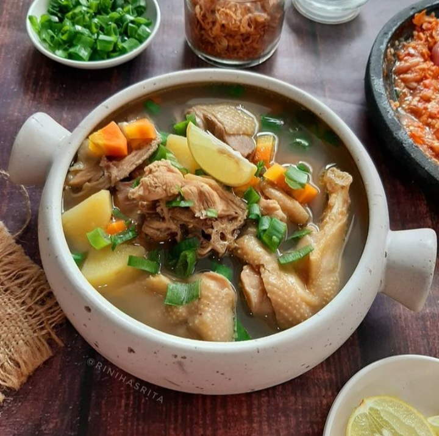
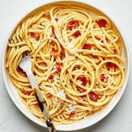

Resep Unggulan
Nasi Goreng Spesial
Nasi goreng yang lezat dan mudah dibuat. Cocok untuk sarapan atau makan malam.
Lihat Resep

Temukan inspirasi memasak untuk setiap hari!
Nasi goreng yang lezat dan mudah dibuat. Cocok untuk sarapan atau makan malam.
Lihat Resep
